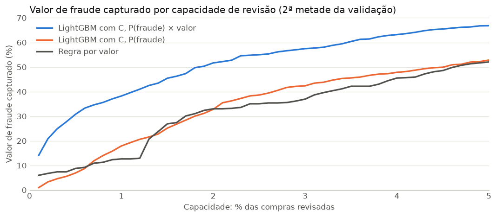

Priorização de revisão de fraude
- Pergunta
- Com capacidade limitada de revisão, quais compras revisar para capturar o maior valor de fraude?
- Dados
- IEEE-CIS Fraud Detection (Kaggle), com 590.540 compras de e-commerce de 2017 e 2018.
- Método
- Divisão no tempo em treino, validação e teste; LightGBM com calibração de Platt; fila ordenada pelo valor esperado de fraude, P(fraude) × valor.
- Resultado
- No período de teste, revisando 3% das compras, a fila por P(fraude) × valor capturou 49,74% do valor fraudado, contra 32,46% da regra atual (maior valor) e 32,37% da fila só por P(fraude).
